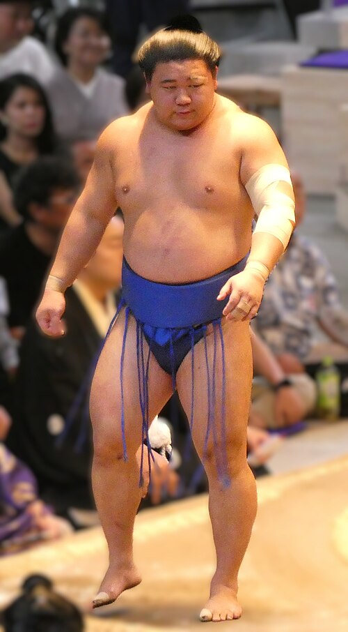
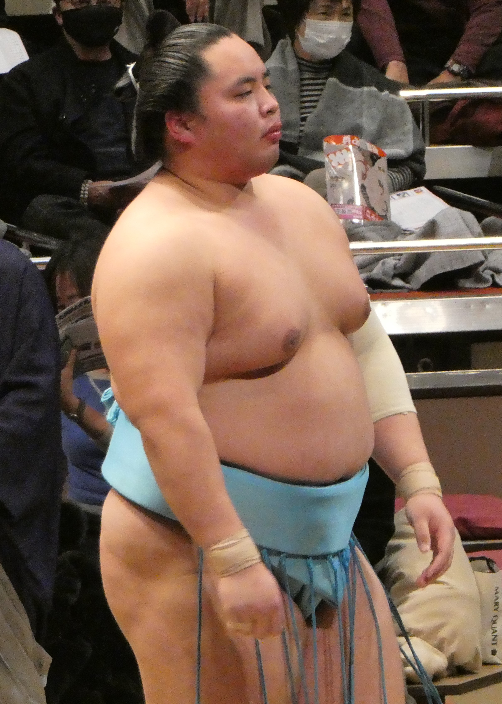
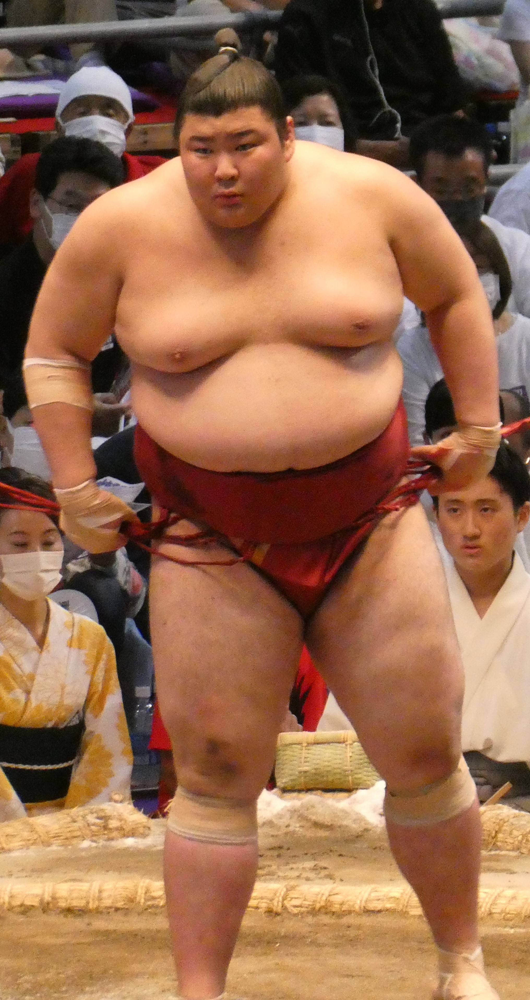

What is the rank of Sekiwake?
The sekiwake rank is the third highest rank in sumo, and is the second lowest of the san'yaku, the title holder ranks. A wrestler can get promoted to sekiwake by getting a kachi-koshi, a winning record, as a komusubi, given that there is space for him; each banzuke, or rankings chart, is required to have a minimum of two sekiwake. It's rare to have more than two sekiwake, as this can only happen when a komusubi gets a convincing record of 11 wins and 5 losses or greater while the two sekiwake slots are already filled, or when an ozeki gets demoted and the two sekiwake slots are already filled. This is the highest rank that a wrestler can achieve by only getting kachi-koshi; to rise to a higher rank, special criteria must be met for promotion. Similar to promotion, a wrestler can get demoted by getting a make-koshi, a losing record, falling back down to komusubi. Sekiwake and komusubi are considered the "junior" san'yaku ranks as they lack the strict promotion criteria that the ranks of ozeki and yokozuna have.

